Nuclear norm approximation¶
This software accompanies the paper Interior-point method for nuclear norm approximation with application to system identification (pdf) by Zhang Liu and Lieven Vandenberghe. The code can be downloaded as a zip file and requires CVXOPT version 1.1.1 or higher and Python 2.7.
Purpose
A function is provided to solve a linear matrix approximation problem in the nuclear norm, possibly with quadratic regularization. The general optimization problem is
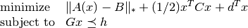
where
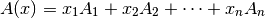
is a linear matrix valued function. The norm in the first term of the objective is the nuclear norm (sum of singular values). The second term is a general convex quadratic function. The constraints are componentwise linear inequalities.
This problem is of interest as a convex heuristic for a regularized rank minimization problem
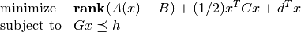
which in general is very difficult.
System identification example
The package contains several examples, including a system identification problem. In this example, we fit a linear state space model to measured inputs and outputs of a dynamical system. The model is constructed from the solution of a regularized nuclear norm minimization problem
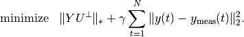
The optimization variables 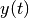 in the problem are the model
outputs. The vectors 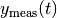 are given, measured,
outputs. The matrix  is a block Hankel matrix constructed from
the variables . The matrix 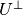 is a matrix whose
columns span the nullspace of a block Hankel matrix
is a block Hankel matrix constructed from
the variables . The matrix 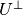 is a matrix whose
columns span the nullspace of a block Hankel matrix  constructed
from measured inputs 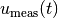.
At the optimum the matrix 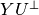 is low rank, and its rank is
equal to the order of a linear model that maps the measured inputs to
the corrected outputs.
constructed
from measured inputs 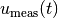.
At the optimum the matrix 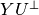 is low rank, and its rank is
equal to the order of a linear model that maps the measured inputs to
the corrected outputs.
The figures illustrate the results for the compact disc arm data
of the Daisy
collection.
The first figure shows the singular values of the matrix
 constructed from the optimized outputs, and the matrix
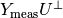 constructed from the measured outputs.
The plot suggests a model of order three.
The second figure compares the actual outputs with the outputs of the
identified model.
constructed from the optimized outputs, and the matrix
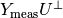 constructed from the measured outputs.
The plot suggests a model of order three.
The second figure compares the actual outputs with the outputs of the
identified model.


Trade-off curve envelope
In this example we compute bounds on the trade-off curve of the bicriterion problem
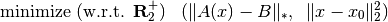
for a randomly generated problem. Points on the trade-off curve can be computed by solving the scalarized problem
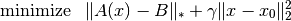
for different weights. Since the trade-off curve is convex, we can also derive upper and lower bounds from the solutions of the scalarized problems. The figures show the bounds after the computation of 3, 5, and 10 scalarized problems. The trade-off curve is in the union of the triangular areas enclosed by the solid and dashed lines.